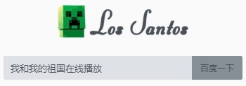

应用介绍
为了解决部分场景下，观看影视难的问题，本应用聚合优质影娱内容，优化浏览和播放体验
能将大多数网页内的视频解析播放并【投屏】到电视上，将各种电影，电视剧，音乐视频，短视频，投屏到电视上，与"佳（家）"人共享
注：本应用不致于替代传统的视频应用，而是为你观看影视增加一种选择，解决看部分影视难的问题
应用功能
进入任意网站的视频播放页面（如下图），之后点击【播放按钮（本文中方括号中的播放按钮所指的都是应用右下角绿色的播放按钮）】进行解析，解析成功后，即可开始播放
【可在播放页面中投屏，电视端建议在应用市场下载"乐播投屏"配合使用】

首页中为你准备了数个优质影视网站，也为你提供更多实用内容，持续更新中...
应用使用
当你想看某个影视作品时，如果你知道该影视在哪个视频网站上，你可以直接进入该网站观看。
或者，你也不用挨个网站进行搜索，你可以直接在【首页】上方的【输入框】内，输入影视作品名称，然后【百度一下】（见下图）
接着选择其中的一集或者直接点击【立即播放】（如下图）

也有可能是下图的样子，直接点击【付费观看】就能进入播放页

如果视频无法正常播放，或者你想投屏至电视，你可以在正片播放页面，点击右下角【绿色】的【播放按钮】进行播放（如下图）

经验之谈：1.如果首页中的影视网站不够你用，或者视频不理想，你可以直接百度搜索【影视名+在线观看】，寻找一个能够观看的网站，并使用【播放按钮】解析播放与【投屏】
2.虽然应用自带广告拦截，但技术还不够成熟，部分网站会在你点击播放后跳转到【流氓广告网站】，为了避免这种情况，只要本应用提示你【点击右边按钮播放...】，你就可以去点击【播放按钮】解析，如果解析后无法播放，再回到网页中播放该视频，检查网页的视频是否有效。【如果跳转了，就快速按下两次后退键】
广告拦截
太多的影视网站都充斥着流氓广告，影响用户体验，本应用尽力将影响用户体验的广告全部拦截。
但有时，广告拦截可能会影响部分网页的正常使用，如果你发现网页功能不正常，可以试着点击【右上角的菜单按钮】选择关闭广告拦截，再刷新页面即可。如果未解决，说明该网站自身存在问题
常见问题：使用过程中出现奇怪的问题
请先重启应用，再试试是否还有该问题发生，如果问题依旧，请在【更多精彩】中，向开发者反馈
常见问题：按下播放按钮后，提示未能找到视频，或进入播放页面后迟迟无法播放
针对这种情况，请你先在页面中播放该视频，等视频正常播放后，再点击【播放按钮】解析播放
如果依然不可以，你可以在【更多精彩】中，向开发者反馈，并说明详细情况
常见问题：想看的影视在各大视频网站找不到或看不了
你可以在首页【影视大全】中，访问【MVCAT或4K屋】，来搜索你想看的电影。播放开始后，还可以按下右下角的【播放按钮】获得更好的播放体验和【投屏】
常见问题：被跳转到恶意网页，并且无法后退
有时候网络运营商或网站为了牟利，将浏览器跳转到流氓广告网页，并且无法后退，此时你可以快速按两次后退键，即可退出。
常见问题：播放速度莫名变快
在某些情况下播放视频速度会略快，如果发生这种情况，请重启应用，在播放记录中重新播放